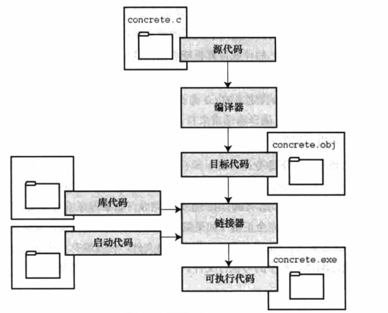

编程的7个步骤
编程的7个步骤
1、定义程序的目标
在动手写程序之前，要在脑海中有清晰的思路。想要程序去做什么首先要明确自己想做什么，思考你的程序需要哪些信息，要进行哪些计算和控制，以及程序应该要报告什么信息。在这一步骤中，不涉及具体的计算机语言，应该用一般术语来描述问题。
2、设计程序
对程序完成什么任务有概念的认识后，就应该考虑如何用程序来完成它，例如，用户界面应该是怎样的？如何组织程序？目标用户是谁？准备花多长时间来完成这个程序？
除此之外，还要决定在程序中表示数据，以及用什么方法处理数据。学习C语言之初，遇到的问题很简单，没什么可选的。但是，随着要处理的情况越来越复杂，需要决策和考虑的方面也越来越多。通常，选择一个合适的方式表示信息可以更容易地设计程序和处理数据。
3、编写代码
设计好程序以后，就可以编写代码来实现它。也就是说，把你设计的程序翻译成C语言。这里是真正需要使用C语言的地方，可以把思路写在纸上，但是最终还是要把代码输入计算机。这个过程的机制取决于编程环境，我们稍后会详细介绍一些常见的环境。一般而言，使用文本编辑器创建源代码文件。该文件中的内容就是你翻译的C语言代码
1 |
|
4、编译
接下来就是编译源代码。编译的细节取决于编程的环境，我们稍后马上介绍一些常见的编程环境。现在，先从概念的角度来讲解发生了什么事情。
编译环境由编译器决定，编译器的作用就是将上面写的源代码转换成可执行的程序。可执行程序是用计算机的机器语言表示的代码。这种语言由数字码表示的指令组成，如前所述，不同的计算机使用不同的机器语言方案。C编译器负责把C代码翻译成特定的机器语言。此外，C编译器还将源代码与C库的代码合并成最终的程序(这个合并的应该是由一个被称为链接器的程序来链接库函数)。这个程序就是一个用户可以运行的可执行文件，这个文件里包含着计算机能理解的代码。
编译器还检测C语言程序是否有效。如果C编译器发现错误，就不生成可执行文件并报错。
5、运行程序
可执行文件是可运行的程序。在常见环境中运行程序要输入可执行文件的文件名，而其他环境中可能要运行命令或者一些其他机制。如在windows中会生成.exe的执行文件 ，双击可运行。
6、测试和调试程序
程序运行是个好迹象，但有时也可能运行错误。接下来，应该检查程序是否按照你所设计的思路运行，你会发现你的程序中有一些错误，计算机行话叫做bug。查找并修复程序错误的过程叫做调试。学习的过程中不可避免会犯错，学习编程也是如此。因此，当你把所学的知识应用于编程时，最好为自己会犯错做好心理准备。随着你越来越老练，你所写的程序中的错误也会越来越不易发觉。
7、维护和修改代码
创建完程序后，你会发现程序有错，或者拓展程序的用途，这时要修改程序。
编程并非像描述的那样是一个线性的过程。有时，要在不同步骤之间往复，例如在写代码时发现之前的设计不切实际，或者想到一个更好的解决方案，或者等程序运行后，想改变原来的设计思路。对程序做文字注释为今后的修改提供了方便。
在很多时候我们经常忽略了第1步和第2步，直接跳到第3步。刚开始学习时，编写的程序非常简单，完全可以在脑海中构思整个过程，即使写错了，也很容易发现。但是，随着编写的程序越来越庞大、越来越复杂，动脑不动手可不行，而且程序中隐藏的错误也越来越难找。最终，那些跳过前两个步骤的人往往浪费更多的时间，因为他们写出的程序难看、缺乏条理、让人难以理解。要编写的程序越来越复杂，事先定义和设计程序环节的工作量就很大。
磨刀不误砍柴工，应该养成先规划再动手编写代码的好习惯，用纸和笔记录下程序的目标和设计框架。这样在编写代码的过程中就会更加得心应手、条理清晰。
编程机制
用C语言编写程序时，编写的内容被储存在文本文件中，该文件被称为源代码文件(source code file)。大部分C系统，都要求文件名以.c结尾(如word.c和test.c等)。在文件名中，点号(.)前面的部分称为基本名(basename)，点号后面的部分称为扩展名，不同操作系统对文件名(基本名+扩展名)的字符长度有限制。
目标代码文件、可执行文件和库
编译器怎么把源代码文件编译成可执行文件的步骤图如下
